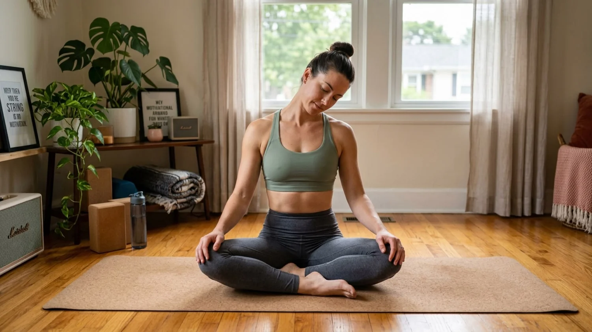
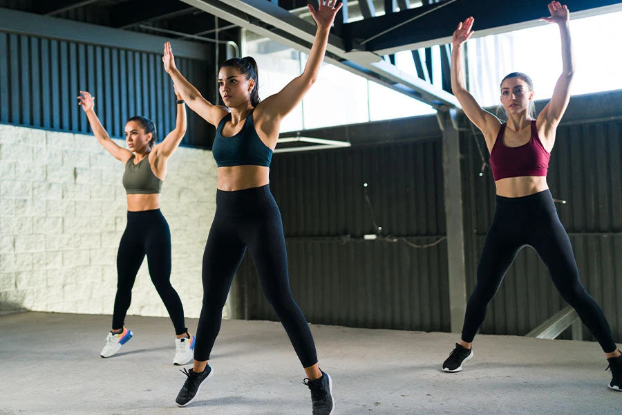
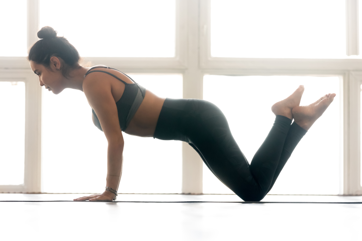

Cardio
Walk briskly, dance, cycle, swim, or play a game that gently raises your breathing.
MOVEMENT & EXERCISE
Exercise does not have to be intense to be valuable. Find movement that fits your body, your energy, and your everyday life.
Find a starting pointThe bigger picture
Regular activity can support your heart, muscles, bones, balance, sleep, mood, and concentration. It can also create time away from screens and give you a chance to connect with people or the world around you.
There is no single best exercise. Walking, dancing, stretching, cycling, swimming, sport, gardening, and active play can all be part of a healthy life.
Choose what fits today
Walk briskly, dance, cycle, swim, or play a game that gently raises your breathing.
Try bodyweight movements, resistance bands, weights, or everyday lifting.
Use comfortable stretches and joint movements to help your body move freely.
Practise steady standing, controlled steps, or activities that help you feel secure.
A simple movement check-in
Tick each step as you complete it. The goal is to build awareness, not to achieve a perfect workout.
0 of 4 steps complete
Listen to your body
Wear suitable clothing and shoes, warm up gradually, drink water, and choose an intensity that feels appropriate for you. Rest days are part of a healthy routine.
Stop if you feel chest pain, faintness, severe shortness of breath, or unusual pain. If you have a health condition, an injury, or are returning to exercise, ask a health professional for advice that fits your situation.
Strengthen and stretch your neck muscles to improve posture and reduce tension.

Learn MoreImprove cardiovascular fitness and coordination with this full-body exercise.

Explore NowStrengthen and stretch your shoulder muscles to improve mobility and reduce tension.
 Learn More
Learn More
Strengthen and stretch your arm muscles to improve mobility and reduce tension.

Learn MoreStrengthen and stretch your eye muscles to improve focus and reduce strain.
Learn More